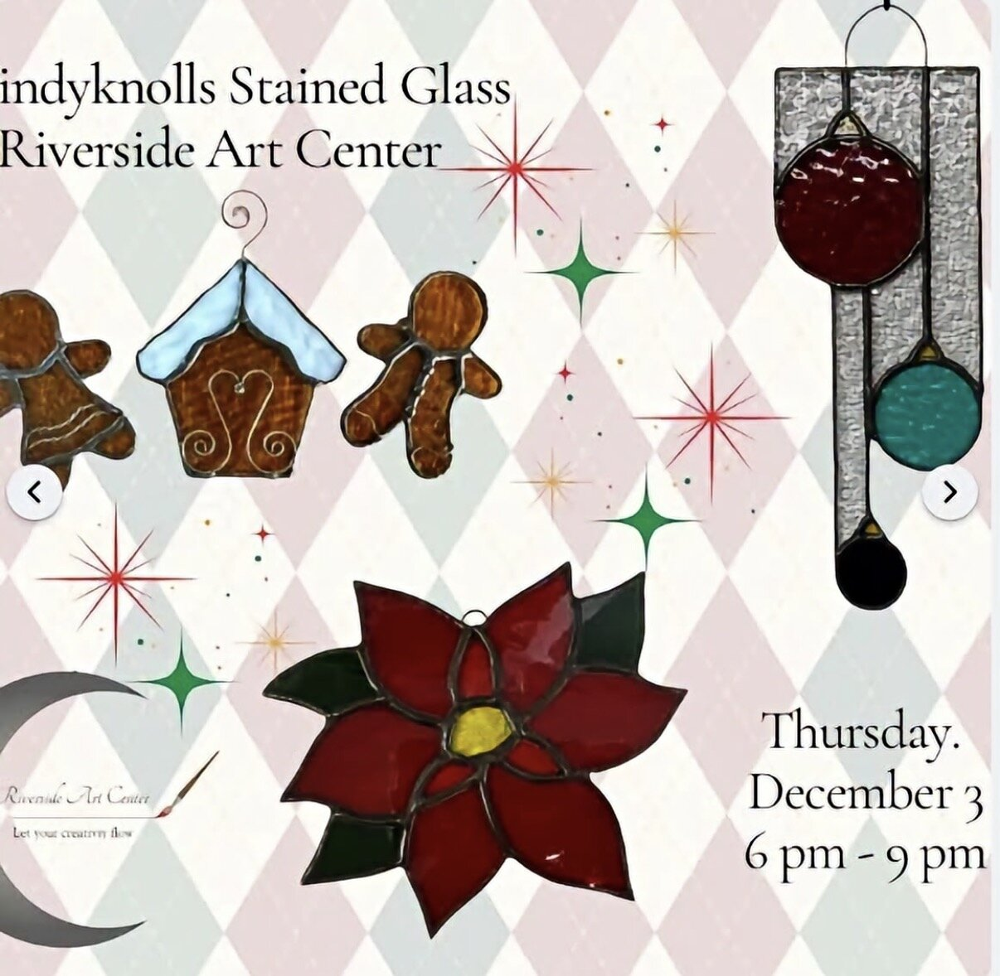

Windyknolls Stained Glass: Holiday Stained Glass Class
Led by Windyknolls Stained Glass , this hands-on workshop guides participants through crafting festive stained glass sun catchers and ornaments. Holiday designs include gingerbread figures, snow-capped houses, red poinsettias, and geometric hanging ornaments.
- Dates & Hours: Thursday, December 3, from 6:00 PM to 9:00 PM.
- Location: Riverside Art Center, 3 W. Auglaize St., Wapakoneta, OH 45895.
- Mission: To provide accessible, hands-on art instruction that encourages community members to explore traditional glass-crafting techniques and create heirloom holiday decor.
- Recommended Audience: Best suited for teens ages 12 and up and adults, including beginners, looking for a creative evening out or a handmade gift-making experience.
- Plan Your Visit: Advance online registration through Windyknolls Stained Glass is required. Class sizes are limited and may sell out quickly. Standard gallery hours are Wednesday–Friday, 12:00 PM–4:00 PM, and Saturday, 10:00 AM–2:00 PM. Evening entry is open specifically for registered workshop attendees. Free street parking is available nearby, and the facility offers a wheelchair-accessible entrance and restroom.